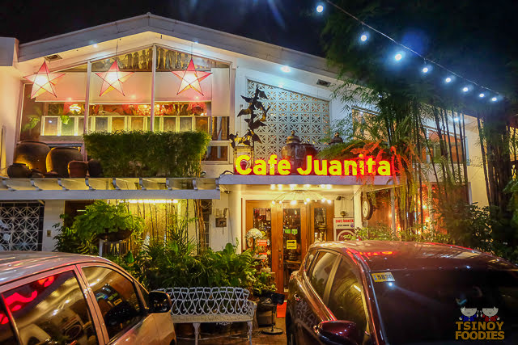
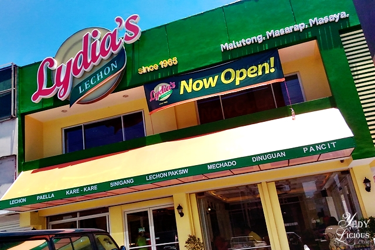

Top-rated dining spots and culinary landmarks in Pasig

Filipino CuisineWest Capitol Drive, Barangay Kapitolyo, Pasig City
10:00 AM – 9:00 PM (Daily)
East Capitol Drive, Barangay Kapitolyo, Pasig City
11:00 AM – 1:00 AM (Weekdays)
11:00 AM – 10:00 PM (Sunday)

Local FavoriteE. Rodriguez Jr. Avenue, Pasig City
10:00 AM – 9:00 PM (Daily)
East Capitol Drive, Barangay Kapitolyo, Pasig City
11:00 AM – 11:00 PM (Daily)